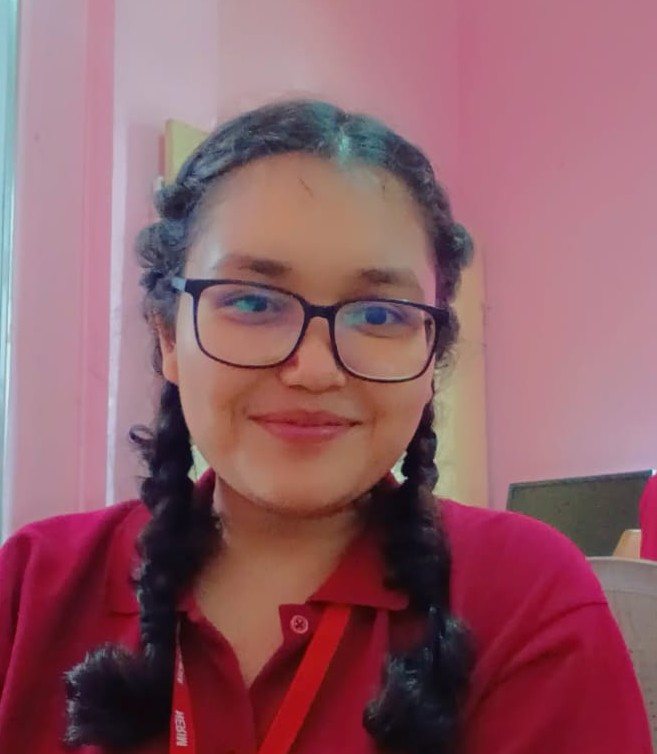

Academy.ai
CREATORS

1. Tanuja Sarma
2. Kritika Sharma
This project is a speech-to-text transcription system that allows users to upload or record audio and instantly convert it into Assamese text. It is powered by Wav2Vec2-Large-XLSR-53 fine-tuned for Assamese, a state of the art transformer model for automatic speech recognition. The system is deployed as a web application where users can interact easily through a clean interface. This work is developed as part of our college minor project, showcasing practical use of deep learning in natural language processing.